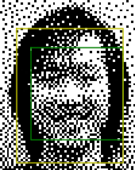
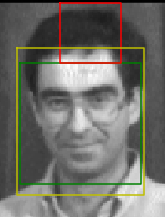
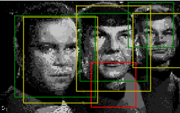
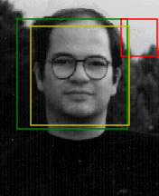
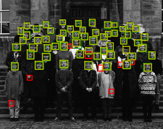

Face Detection using sliding window
Face detection has always been an active topic of research in the computer vision community. In this project, I have implemented a face detection algorithm based on sliding windows. The sliding window model classifies image patches as being an object or non-object, which in this case is a face. Face and non-face images have been used to generate HOG features, and a linear SVM is trained using these features. Using a sliding window approach, each patch of the image is classified as being face or non-face. This project is based on the paper by Dalal and Triggs 2005 for the detection of faces in images using a sliding window. The project can be divided into the following steps.
Hard negative mining was also performed using the trained classifier to find the false positive examples. These hard negative features were included in the training data using which the linear SVM was trained again. Using hard negative mining a moderate increase in accuracy was seen.
HOG features are used in computer vision mostly for object detection. The HOG features of an image are computed using the gradients of the image in the x and y-direction. These gradients capture the contour, silhouette and texture information. Similar to SIFT features, in the HOG features we pool the gradient orientation information locally. The image window is divided into small spatial regions called cells. For each of these cells, a 1-D histogram of gradients is computed. In this project, I have taken the cell size to be 6. Hence a 36x36 image gives a HOG feature of dimension 6x6x31. This HOG feature is flattened out to get a HOG feature of dimension 1x1116. The methodology for the computation of positive and negative HOG features is given below.
To get positive HOG features, 36x36 face images were taken, and HOG features were computed for every image. The HOG features were flattened to get an 1116 dimensional feature for every image.
To get negative HOG features, non-face images were taken, and since the non-face images were not of fixed size(36x36) as in the case of face images, 36x36 blocks of the non-face images were extracted. The HOG features were computed for these blocks and flattened out to get features of dimension 1x1116. Using multiple scales to sample the negative examples was tried but it did not have a major impact on accuracy. Moreover, it increased the computation time considerably. Hence it was not included in the final implementation.
A visualization of the HOG feature template is given below. From the feature template, it is easy to visualize that the template somewhat resembles a face. Hence, it is not much of a leap to say that the HOG feature templates resembles the object to be detected, which in this case are faces.
A Linear Support Vector Machine was trained using the positive and negative features. The positive features were given a label '1' while the negative features were given a label '-1'. The linear SVM was trained using these labels and features to get a hyperplane to divide the data into face and non-face. The choice of parameter C for the Linear SVM has been discussed in the experimental design section. The figure below shows the separation of the positive and negative examples at training time.
In the final part of the project, a sliding window based face detector was implemented based on the work by Dalal and Triggs. To do this, HOG features were computed for the test images and patches were extracted from the HOG feature matrix. The extracted HOG features were flattened out for a given patch, and a 1x1116 dimension feature was obtained. The trained linear SVM was used to determine wether the extracted patch was a face or a non-face depending on the confidence. In this way, a sliding window was iterated through the entire image to detect faces in the image. This was done for every test image and on multiple scales. Bounding box coordinates and the corresponding confidence score was stored for those image patches whose confidence was above a predefined threshold. The confidence score was sorted, and nonmaximal suppression was performed on the top 500 detections. A bounding box was then displayed around the images patches that were passed after nonmaximal suppression. The choice of parameters is discussed in the experimental design section.
Hard mining is performed to artificially generate more negative training samples. For this purpose, features were generated in a way similar to the case of random negative features, except for the fact that only the features with false positive prediction were returned instead of returning all extracted features. To do this, the trained linear classifier was used to determine whether the extracted feature was a false positive, and only the false positive features were stored and returned. The hard negative features were stacked with the random negative features. The linear SVM was trained again on these new features to generate a new hyperplane. The run detector was run again on the newly trained linear SVM to detect face patches in test images. An increment of approximately 3% can be seen in the accuracy.
In this project, there were many parameters that required tuning. These parameters greatly influenced the results obtained. The role of these parameters and their effect on the result have been discussed in this section.
In this section, some of the good results obtained using the sliding window are given below. In section 6.1 and 6.2, the detection performance has been evaluated using random negative features and using hard mining of negative features respectively. Using random negative features, an average precision of 86.5% was obtained and using hard negative features, an average precision of 84.9% was obtained. As a result of which an increase of approx 3% was seen using hard negative features.
|   |
|    |
To test the performance of additional classifiers, the decision tree classifier was implemented. Decision trees are a non-parametric supervised learning method used for classification and regression. The goal is to create a model that predicts the value of a target variable by learning simple decision rules inferred from the data features. The performance using the decision tree classifier has been evaluated in the proceeding sections.
Using the decision tree classifier, I was able to achieve an average precision of about 6.2% with a really bad recall. The time taken to train the classifier as well as for the detection was long. I believe that this can be attributed to the fact that decision trees are non-linear classifiers. Also, the given data can be better classified using a linear classifier as compared to a nonlinear classifier like the decision tree, as a result of which the average precision obtained was really low. Decision trees also tend to create over-complex trees that do not generalize the data well.